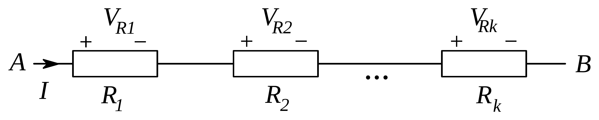
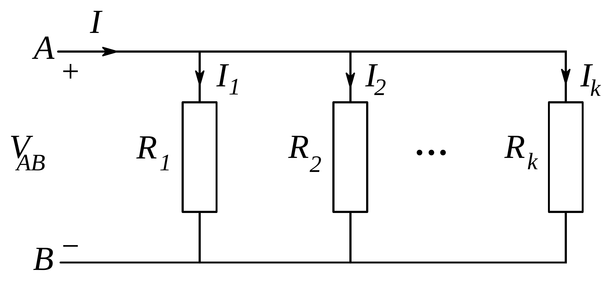
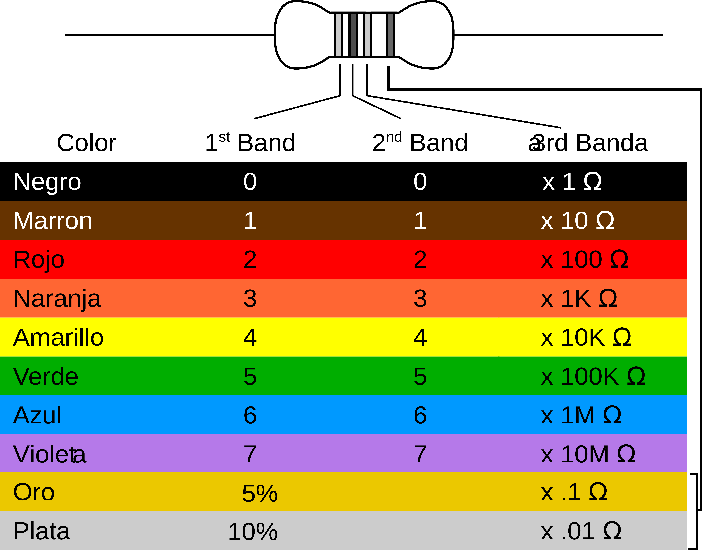

La ley de Ohm relaciona la caída de potencial en una resistencia con la intensidad que la recorre. Al asociar resistencia en serie o en paralelo, es posible determinar el valor de una resistencia equivalente a toda la asociación.
Cuando una corriente eléctrica atraviesa un conductor en un circuito eléctrico, hay una relación entre la intensidad que circula a través del conductor y la diferencia de potencial entre sus extremos. Esta relación es la ley de Ohm
donde es la resistencia del conductor. En muchos casos se puede considerar el valor de la resistencia como constante, con lo que la relación entre voltaje e intensidad es lineal.
Cuando tenemos una única resistencia se puede aplicar la ley de Ohm sin dificultad, pero cuando lo que tenemos es un sistema de resistencias la cuestión es más comprometida. A pesar de ello, debido a que se puede utilizar la ley de Ohm como una buena aproximación lineal en una gran parte de las situaciones, es posible simplificar los circuitos formados por varias resistencias y emplear un único valor que represente a toda la asociación. A este valor se le denomina resistencia equivalente. Vamos a considerar dos maneras básicas de asociar las resistencias, en serie y en paralelo.
Dos o más resistencias están puestas en serie cuando por ellas circula exactamente la misma intensidad de corriente para cualquier valor de la tensión que se les aplique.

Figura 1.1: Asociación de resistencias en serie.
En este tipo de asociaciones, la caída de potencial total que tiene lugar en las resistencias es la suma de las caídas de potencial en cada una de ellas,
Puesto que se puede aplicar la ley de Ohm a cada una de ellas, y dado que sabemos que la intensidad de corriente que circula por cada una de ellas es la misma, tenemos que
Finalmente se puede asociar este valor con el de la resistencia equivalente, es decir,
Dos o más resistencias están conectadas en paralelo cuando la caída de potencial que tiene lugar en cada una de ellas es exactamente la misma para cualquier valor de la intensidad de corriente.

Figura 1.2: Asociación de resistencias en paralelo.
En estas asociaciones, por cada resistencia circula un valor diferente de la intensidad de corriente. Por tanto, la intensidad total que llega a la asociación la suma de las intensidades de cada resistencia,
Aplicando la ley de Ohm en cada resistencia, y dado que la caída de potencial que tiene lugar en cada una es la misma, resulta que
Se puede ahora identificar este valor con el de la resistencia equivalente, esto es,
